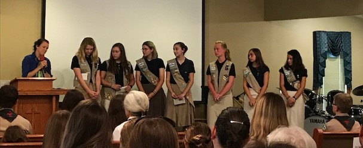
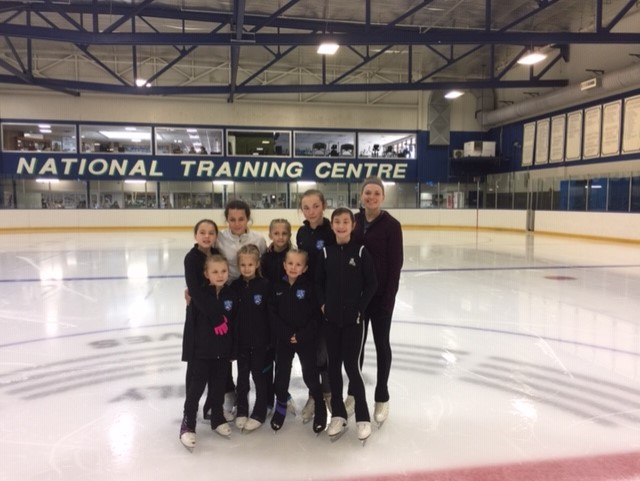
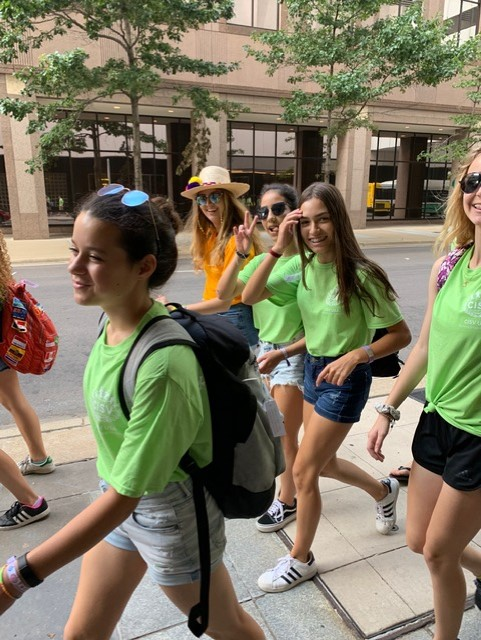
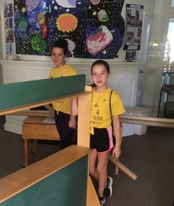
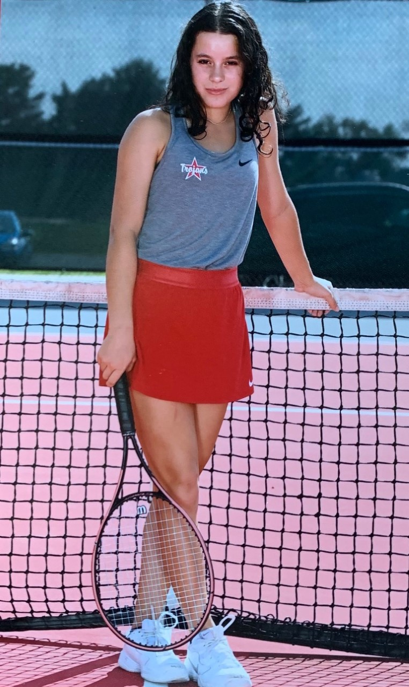
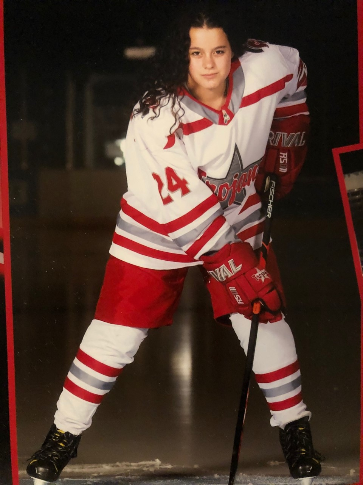

-

- Girl Scouts has taught me a lot about leadership and accomplishment. I have served as the Senior Patrol Leader of my Girl Scout Troop multiple times and planned activities to complete badges. I have bridged through Daisy, Brownie, Cadette, Junior, and Senior and am now an Ambassador. I have completed my Bronze and Silver Awards, requiring me to design a project resulting in lasting effect on the community. I have started my Gold Award, where I will be working with Oasis House in Dayton on giving sex trafficking victims resources to help them earn their GED or continuing education in the greater Dayton area.
- I have figure skated since I was three years old and still enjoy practicing and learning new skills. For twelve year I competed in figure skating across the Midwest from October to July. My freshmen year in high school I competed in the United States National High School Competition and placed first in my level. Figure skating has taught me perseverance and hard work. I skate for the Troy Skating Club and recently started coaching for their Learn to Skate program. Coaching has allowed me to pass on my knowledge and build leadership skills. Coaching has also helped me to understand my own skating better. I am endeavoring to pass as many tests as possible. To achieve this, a skater must pass through all of the levels of three different areas of testing. I have passed Preliminary, Pre-Bronze, Bronze, and Pre-Silver in ice dancing, with my Silver, Pre-Gold, and Gold tests left. I have passed all of my Moves in the Field tests and am a Gold Medalist. I have passed Pre-preliminary, Preliminary, Pre-juvenile, Juvenile, and Intermediate Freestyle, with my Novice, Junior, and Senior tests left.
- I am currently the JLJR (Junior Local Junior Representative) on my chapter's CISV Junior Board. This position is a presidential role, which entails planning activities, meeting, and camps for the chapter; leading the rest of the Junior Board; and recruiting and retaining members. I have previously served as the Junior Representative. CISV is an international youth peace focused organization made up of chapters from around the world; it is run and maintained mostly by the youth in the chapter. The non-profit hosts camps for specific ages where delegations of four or more children come from up to 12 countries. The camp can be anywhere from 2 weeks to a month. The pillars of the organization are sustainable development, conflict/resolution, diversity, and human rights. I have not only help leadership positions in CISV, but also been chosen as a representative of the United States to travel to many of these camps. I went to a “Village” at eleven years old in Finland, “Interchange” at twelve years old in Spain, “Youth Meeting” at fourteen years old in Germany, and “Step-Up” at fifteen in Texas. I was also chosen to be a Junior Counselor at a Village in Massachusetts, but it was cancelled due to COVID-19. I have also been to many other smaller camps within the Midwest region of the United States, as well as National camps. CISV has taught me worldliness, acceptance, and diversity.
- I have attended a youth group on Sundays with kids my age to discuss our faith and pray with each other over current issues. Being a part of this group has helped me to make new friends and meet more people in my community. It has also taught me about my own faith and how to support others in their faith.
- Volunteering at my old preschool, Overfield, during the summer allows me to give back to the teachers that helped me. Overfield is a Reggio Emilia based school, meaning that the students drive the learning based on the principles of respect, responsibility and community through exploration, discovery and play. The school has a garden and does most of the teaching outside. They do not teach memorization, but instead create connections in the brain. The summer camp allows kids to be entertained and continue learning during the summer. It has taught me about the importance of patience and organization while leading kids.
- My sophomore year in high school I joined the Troy High School Tennis team and played varsity as Second Doubles my junior year. Playing for a team was new to me, as all of my previous sports had been individual sports. It has taught me about cooperation, collaboration, and encouragement. I have played tennis off and on since I was five, but my freshman year I realized how much I enjoyed the sport and started playing year-round, leading me to become a much better player. This gave me the confidence to join the high school team and taught me how to become better at playing against different styles and people.
- I started playing hockey the summer after my sophomore year and tried out for the Troy High School Hockey team my junior year. I had wanted to play hockey for a long time, but my parents did not want me to be distracted from figure skating and my schedule was too full to allow it. This past year I was finally able to start playing, as I had a job (I could pay for the equipment and fees myself) and was able to drive (I could drive myself to practice). Hockey has been unlike anything I have ever done. Most sports that I participate in I have been doing for as long as I can remember. Consequently, learning something completely new to me was daunting, but I enjoyed playing and was determined to make the team. Learning how to play hockey and being on the team has taught me what it really means to have a growth mindset and to go outside of my comfort zone. My determination was especially tested when I had to get up and go to 5:30am practices. This was one of the first instances that I was not inherently experienced at something and had to learn how to not be the the best player on the team and still enjoy it.





Outside Links
The Dayton Regional STEM School (Click Here)